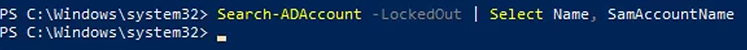
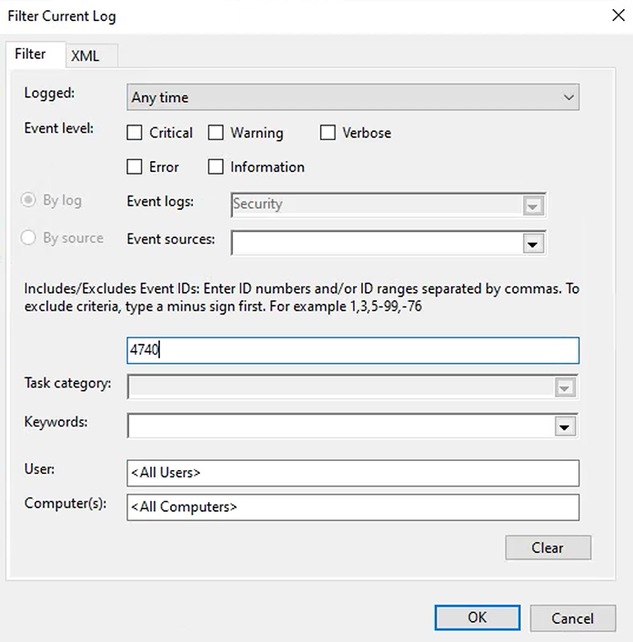

Tutorial – Active Directory Health Check
This check verifies whether user accounts are currently locked out in Active Directory. Locked-out accounts can indicate authentication issues, incorrect credentials, or potential security concerns.
Identify user accounts that are currently locked out using PowerShell:
Search-ADAccount -LockedOut | Select Name, SamAccountName

Review the lockout source by checking the Security Event Logs on Domain Controllers.
Open Event Viewer on the Domain Controller.
- In the left panel, expand:
- In the right panel, clik on Filter Current Log...
Look for Event ID 4740, which indicates an account lockout.
